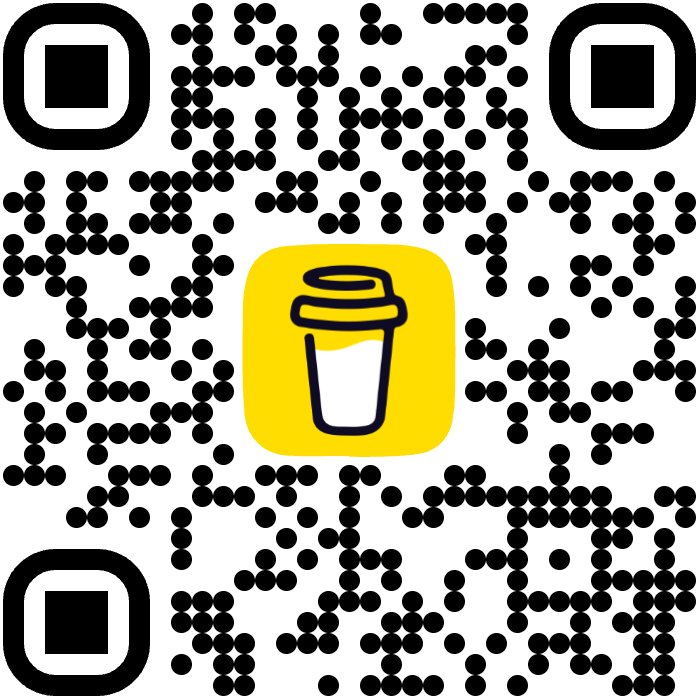

No signup required. Capture your screen instantly for free.
Start recording immediately without creating an account or providing an email.
Professional screen recording with no cost, no watermarks, and no time limits.
Your recordings are processed locally in your browser and never uploaded to any server.